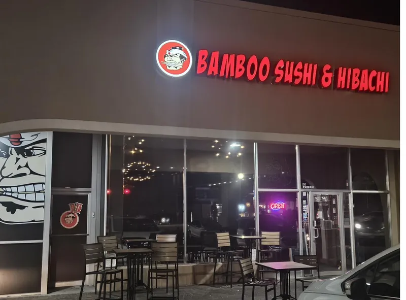

Crestview
2505 S Ferdon Blvd
(850) 689-1391

Made to order and served across Crestview, Fort Walton Beach and Niceville.
Sushi rolled at the bar. Hibachi fired fresh. Noodles, appetizers and plenty more when everybody at the table wants something different.
What started as a 45-seat restaurant in Crestview grew into three Bamboo locations across the Emerald Coast. The scale changed. The family-owned identity didn't.

2505 S Ferdon Blvd
(850) 689-1391
9 Eglin Pkwy NE
(850) 200-4250
117 W John Sims Pkwy
(850) 678-0771